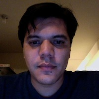
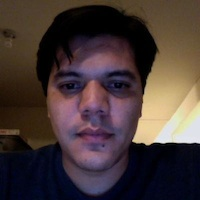
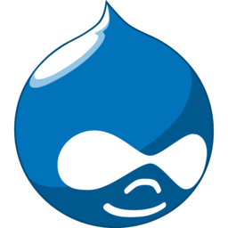

Mi nombre es Jesús Manuel Olivas
Me pueden encontrar en twitter como @jmolivas
En mi blog http://jmolivas.com

Mi nombre es Jesús Manuel Olivas
Me pueden encontrar en twitter como @jmolivas
En mi blog http://jmolivas.com
Relativamente nuevo en Drupal aproximadamente 2 años de experiencia trabajando con este framework.
Tengo ese mismo tiempo programando con PHP y con symfony2 en fechas recientes.
Próximamente :
@hechoendrupal
http://hechoendrupal.com
Drupal es un programa escrito en PHP, con licencia GNU/GPL, que se utiliza como sistema base de sitios y aplicaciones web.
Su flexibilidad lo hace que sea adecuado para realizar diferentes tipos de sitios y aplicaciones.


D5 - 6,954
D6 - 300,635
D7 - 315,789
D8 - 114
Total - 623,492
La palabra "libre" en nuestro nombre no se refiere al precio; se refiere a la libertad.
Libertades del software libre.
Existen alrededor de 10,000 módulos contribuidos.
Existen alrededor de 1,000 temas contribuidos.
Es uno de los manejadores de contenidos más seguros que existen ya que es construido con la seguridad en la mente y posee un gran equipo de seguridad.
http://drupal.org/security-team
No depende de una compañía para su desarrollo. Al estar el código bajo una licencia de software libre es posible el desarrollo de mejoras y arreglo de errores por los miembros de la comunidad.

Drupal
Wikipedia
Introducción general a Drupal - Pedro Cambra
Introducción a Drupal - Ruben Egiguren
¿Qué es posible desarrollar con Drupal? - Rootstack
Slides hechas con kinout
kinout on github
Tipografías utlizadas Bitter & Open Sans
Open Sans en google webfont directory
Bitter en google webfont directory
Jesús Manuel Olivas | @jmolivas | http://jmolivas.com